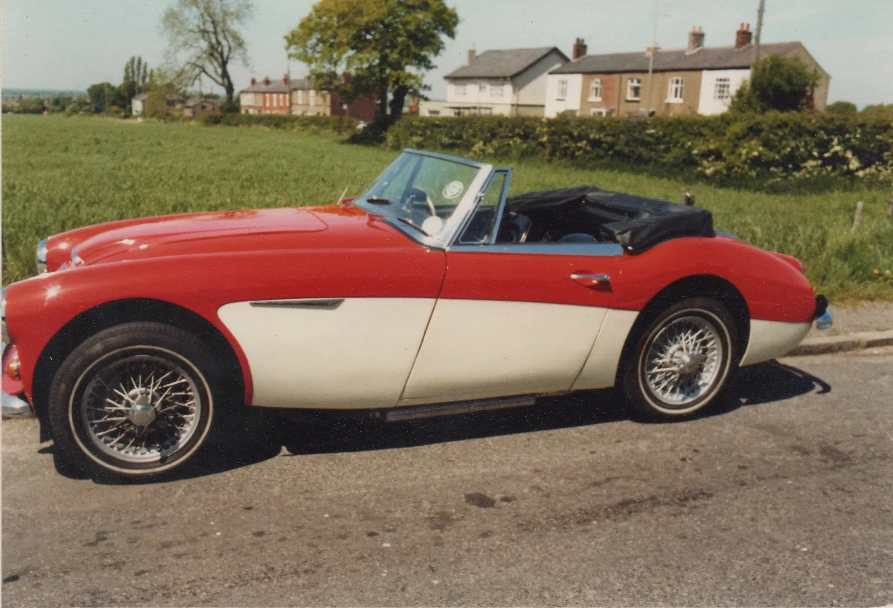
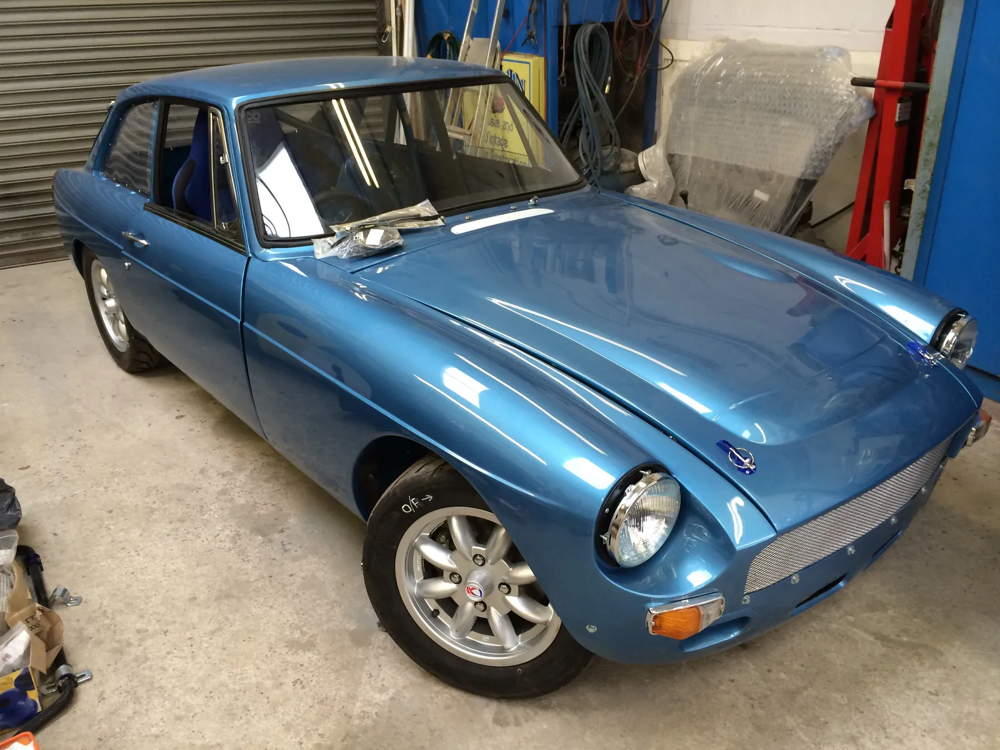
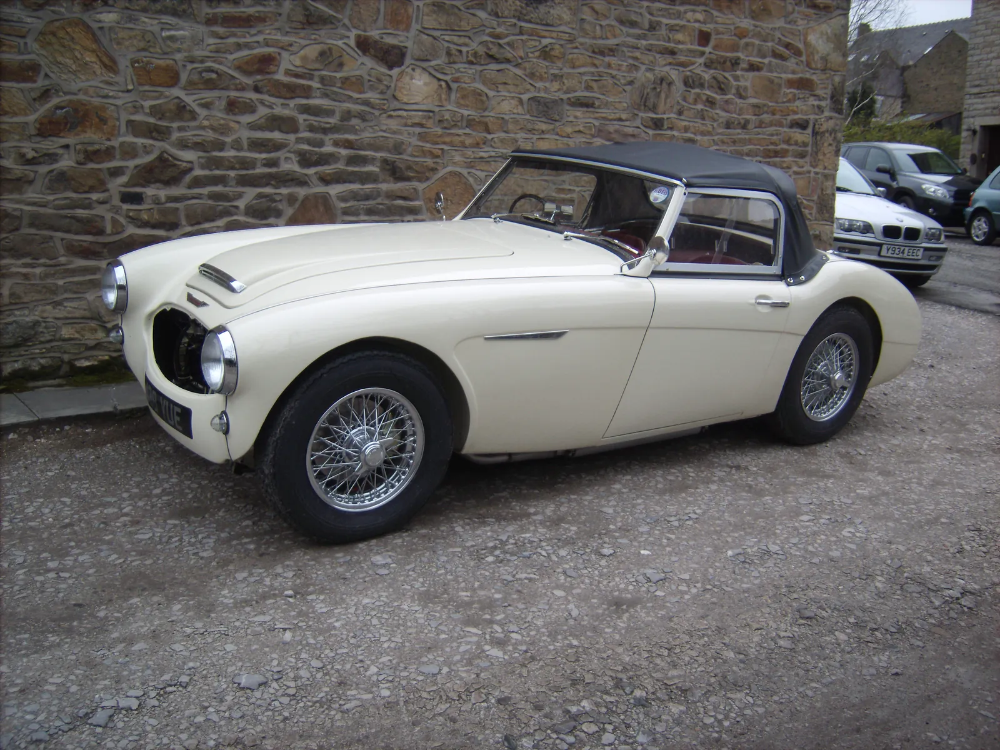
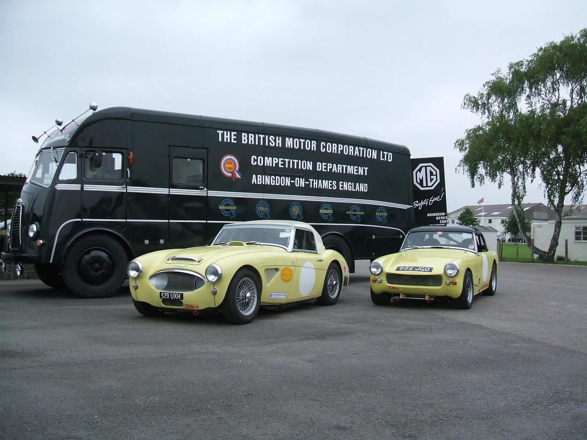

Austin-Healey 3000
Price on application
Fully restored by Merlin · fast road specificationServicing, coach building and restoration for classic and vintage cars of every marque, by a family that has spent three generations with its hands on them.
Call 01663 746499 Enter the gallery




Services, MOT preparation, brakes, carburettors, electrics.
Bare-metal resprays, lead loading, fabrication.
Part or full, to concours standard.
Healeys, Sprites and MGBs built to compete.


